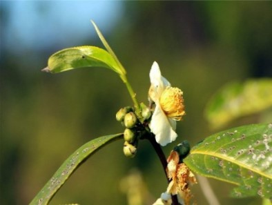

茶与健康

柑普茶为此火爆？其品质又有哪些特点？

咖啡受欢迎 年轻人为什么就不喜欢喝茶？

喝茶到底从好的开始喝还是一般的？
手机党的福利来了：多喝这几款护眼茶
现代人没有一天是能离开手机和电脑的，就算是聚餐、聚会的时候，也是一桌人都低着头玩手机。本来上班的时候就要长时间面对着电脑了，可是回家的时候眼睛还是得不到休息，一直盯着手机，这样会导致眼睛干涩、疲劳、近视程度加深等问题。多喝以下这几款护眼茶，能更好地缓解眼部疲劳，保护视力。 详情
必知！经常喝浓茶究竟有多伤身体？
大夏天总能看见有人喜欢一把茶叶泡一天，特别常见到的是公交车司机，经常可以看到他们一个大大的茶杯，里面泡满了茶叶，也不知道泡了多久，时不时就喝一口。 这样的茶叶，咱不说他到底泡了多久，浓是肯定的，许多老司机喝茶，讲究的是茶叶的苦涩味，味浓才觉得有提神作用，否则茶之无味就没啥意思了。 详情
冬季喝菊花茶有神奇效果 这样泡好喝
冬季，除了皮肤变得格外干燥外，眼睛也容易变得干涩，尤其是长期对着电脑、手机的人。若想缓解眼睛干涩引起的各种不适，可多食用百合、淮山、枸杞等有明目润眼功效的食物，除此外，还可以用菊花煮水敷眼，或试试菊花决明子茶。 详情
中草药泡茶需谨慎：常喝甘草茶可致高血压
近年来，中草药泡茶是十分热门的一种养生茶，因为信赖中医，人们遇到一些小症状的时候总喜欢泡一些中草药茶来饮用。但是中草药泡茶需要谨慎对待，以免引发一些副作用。 详情
谁说夏天只能喝绿茶？这3种大众茶类你一定会爱上！
虽说下雨但天气还是很闷热，不想办法解暑降火都对不起自己这张绝美的脸蛋啊！！所以！喝喝茶是不错的选择~可是夏天一到，难道宝宝只有绿茶能喝？ 详情